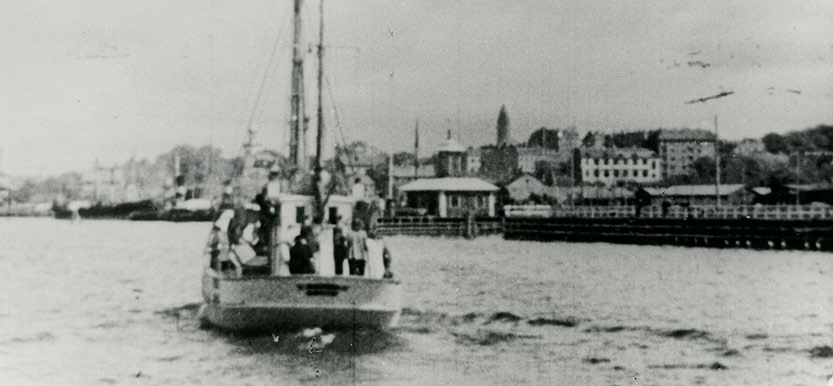
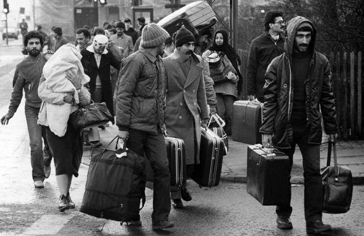
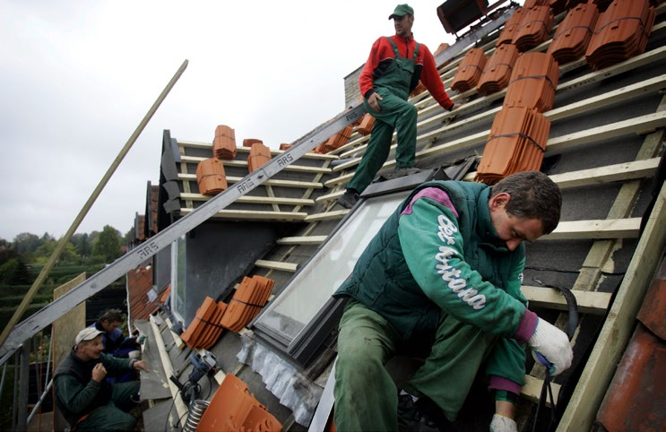

6.5 – INDVANDRING TIL DANMARK GENNEM TIDERNE
sidde 193
Gennem Tiderne
Den danske befolkning er forholdsvis homogen. Det vil sige, at de fleste har samme sprog, kultur og historie. Alligevel har mennesker fra andre lande gennem tiderne bosat sig permanent i landet.
De er blandt andet kommet som flygtninge, for at arbejde, eller fordi de er blevet gift med en dansker. Der er tale om mange hundrede års indvandring, som har sat et vist præg på den danske befolkning, det danske sprog og den danske kultur. Indvandringen til Danmark har dog været klart størst i nyere tid. Særligt i løbet af de sidste årtier er antallet af indvandrere og efterkommere efter indvand rere i Danmark steget markant – fra cirka 150.000 i 1980 til én million i 2025, svarende til 16,7 procent af Danmarks samlede befolkning på seks millioner.
Jøderne er et eksempel på en minoritet, der har været længe i Danmark. De første jøder kom til Danmark i 1600-tallet på invitation fra kongen. Jøderne fik en blandet modtagelse og tilværelse, og for at få opholdstilladelse skulle de betale et stort pengebeløb og underkaste sig en strengere lovgivning end resten af befolkningen. I slutningen af 1700-tallet levede der cirka 1.600 jøder i København. Jøderne fik gradvist flere rettigheder, og med det såkaldte ”Jødiske Frihedsbrev” i 1814 blev jøderne næsten ligestillet med andre danskere. I begyn delsen af 1900-tallet ankom yderligere cirka 3.000 jøder til Danmark. De var på flugt fra fattigdom og forfølgelse i Rusland.
Med tiden blev jøderne en accepteret og godt integreret del af det danske samfund. Blandt andet derfor blev langt de fleste danske jøder hjulpet til Sverige af danske medborgere i 1943 under det nazistiske Tysklands besættelse af Danmark. Dermed undgik de samme omfattende folkedrab, som jøderne i krigens øvrige tysk kontrollerede områder.Dansk fiskekutter med jødiske flygtninge på vej mod den svenske ky
Dansk fiskekutter med jødiske flygtninge på vej mod den svenske kyst i 1943. Foto: Nationalmuseet.
Læremateriale Til Indfødsretsprøven

sidde 194
I tiden omkring 2. Verdenskrig var det især krigsflygtninge, der kom til Danmark. Den største gruppe var de knap 240.000 krigsflygtninge fra Tyskland, som kom i slutningen af eller lige efter besættelsestiden (1945).
Herudover kom der omkring 23.000 krigsflygtninge fra navnligt Sovjetunionen og de baltiske lande, Estland, Letland og Litauen. I slutningen af 1940’erne var langt hovedparten af disse flygtninge dog vendt tilbage til deres hjemlande.
I de første årtier efter 2. Verdenskrig var det først og fremmest flygtninge fra de østeuropæiske lande, der kom til Danmark. Der kom ungarske flygtninge som følge af opstanden i Ungarn i 1956, tjekkoslovakker, der flygtede under den sovjetiske invasion i Tjekkoslovakiet i 1968, og polske jøder, der var tvunget til at forlade Polen på grund af en antisemitisk bølge i landet i 1968-69.
Indvandringen i 1960’erne var dog i særlig grad præget af gæstearbejdere fra især Tyrkiet, Pakistan og det tidligere Jugoslavien. De opfyldte et stort behov for udenlandsk arbejdskraft på det danske arbejdsmarked.
En stor del bosatte sig permanent i Danmark og fik senere deres familier til landet. Dét var nemlig stadig muligt trods det stop for indvandring, der blev indført i 1973.
I 1970’erne, 1980’erne og 1990’erne kom der igen flygtninge til Danmark. Der var ikke mindst tale om flygtninge fra krigen mellem Irak og Iran (1980-88) og borgerkrigen i Jugoslavien (1991-95). Desuden kom der også flygtninge fra blandt andet Vietnam, Sri Lanka, Somalia samt palæstinensiske flygtninge, som navnlig flygtede fra borgerkrigen i Libanon.Iranske flygtninge ankommer til Danmark i 1984. Foto: J
Iranske flygtninge ankommer til Danmark i 1984. Foto: Jens Dresling/Ritzau Scanpix.
Læremateriale Til Indfødsretsprøven

sidde 195
Mellem 2000 og 2020 ankom især mennesker fra Afghanistan, Mellemøsten og Afrika på flugt fra krig og fattigdom. Antallet af asylansøgere, som kom til Europa og Danmark, nåede et højdepunkt under den såkaldte flygtningekrise, hvor i alt 21.000 søgte asyl i Danmark i 2015. Den største gruppe var flygtet fra borgerkrigen i Syrien.
Derudover er der i samme periode også kommet mange flere udlændinge til Danmark for at arbejde. De er kommet fra hele verden, men størstedelen fra andre EU-lande. Antallet af indvandrere og efterkommere fra andre EU-lande er steget fra 116.000 i 2000 til 318.000 i 2026. EU-borgere har ret til frit at arbejde i andre EU-lande, og størstedelen af stigningen kan tilskrives udvidelserne af EU i 2004, 2007 og 2013 med i alt 11 østeuropæiske lande. Disse har medført, at mange østeuropæere er flyttet til Vesteuropa og herunder Danmark, hvor lønningerne generelt er højere og levevilkårene bedre.Udenlandske håndværkere lægger tag på hus ved Kø
Østeuropæiske håndværkere lægger tag på hus ved København. Foto: Jens Dresling/Ritzau Scanpix.
Siden Ruslands invasion af Ukraine i februar 2022 er et stort antal ukrainere ankommet til Danmark. Pr. 1. januar 2026 bor der 44.000 fordrevne fra Ukraine i Danmark.
De ti lande, som flest indvandrere og efterkommere i Danmark har oprindelse i, er i januar 2026 således Tyrkiet (68.000), Ukraine (59.000), Polen (57.000), Rumænien (47.000), Syrien (46.000), Tyskland (45.000), Irak (35.000), Pakistan (29.000), Iran (29.000) og Libanon (28.000).
Læremateriale Til Indfødsretsprøven

Fonte: Læremateriale til Indfødsretsprøven, SIRI.